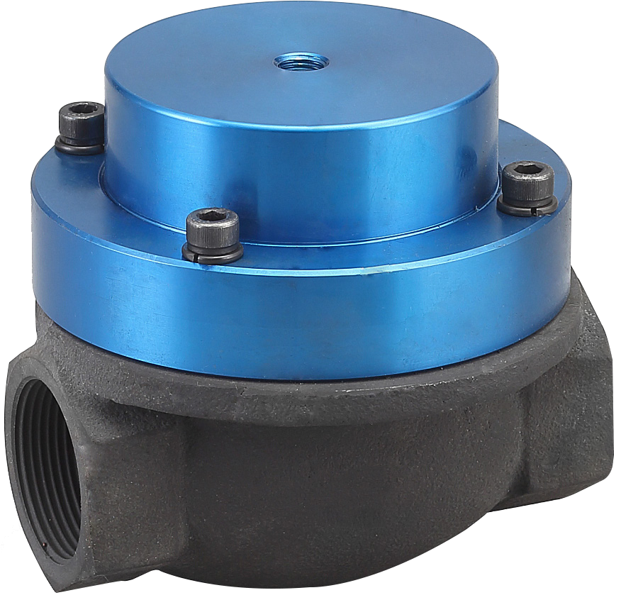
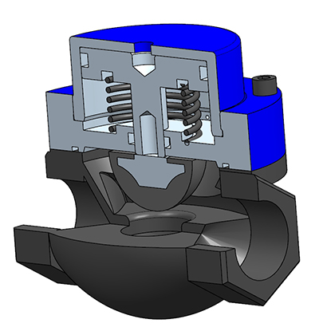

블라스트 부품 / 에어밸브
에어밸브 Air Valve
블라스트 설비의 압축공기 배관 라인에 설치되어 파일럿 에어 신호로 공기 관로를 자동 개폐하는 단동식 공압 에어밸브입니다. 일반적인 볼밸브나 핀치밸브 대신 에어 라인 차단용으로 폭넓게 사용됩니다.


작동 원리 및 구조적 특징 Features & Mechanism
- 상시 열림(Normally Open) 단동식 공압 제어: 평상시 관로가 열려 있으며, 파일럿 작동압이 공급되면 내부 콘(Cone)이 내려와 에어 관로를 차단합니다.
- 콘(Cone) 팝업 개폐 방식: 기존 핀치밸브와 달리 콘에 의한 팝업 방식을 적용해, 이상 발생 시 핀치밸브보다 수리·교체가 간편하고 유지보수 비용이 경제적입니다.
- 그리트밸브 콘 공용 호환: 내부 소모품인 콘(Cone)은 당사 그리트밸브(32A · 40A)의 콘과 동일한 규격을 사용해 예비부품 관리가 수월합니다.
주요 사양 Specifications
| 모델 (Model) | DAV-32, DAV-40 |
|---|---|
| 작동 방식 (Operation) | 상시 열림 (Normally Open · 파일럿 에어 공급 시 닫힘) |
| 배관 연결 규격 (Available Size) | 1¼" (32-32A), 1½" (40-40A) |
| 파일럿 포트 (Pilot Port) | PT ¼" |
| 사용 압력 (Working Pressure) | 5 ~ 9 kg/㎠ |
| 소모품 호환 | 그리트밸브 콘 (32A · 40A)과 공용 |
견적·규격 문의 051-319-2332 · daehatw@daum.net